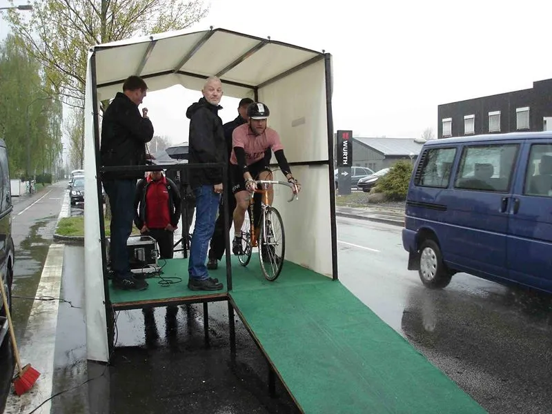
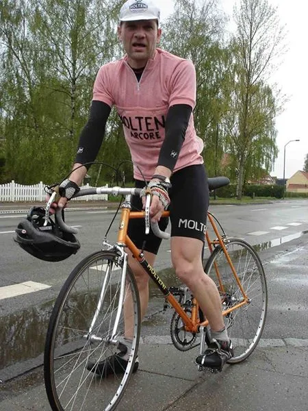
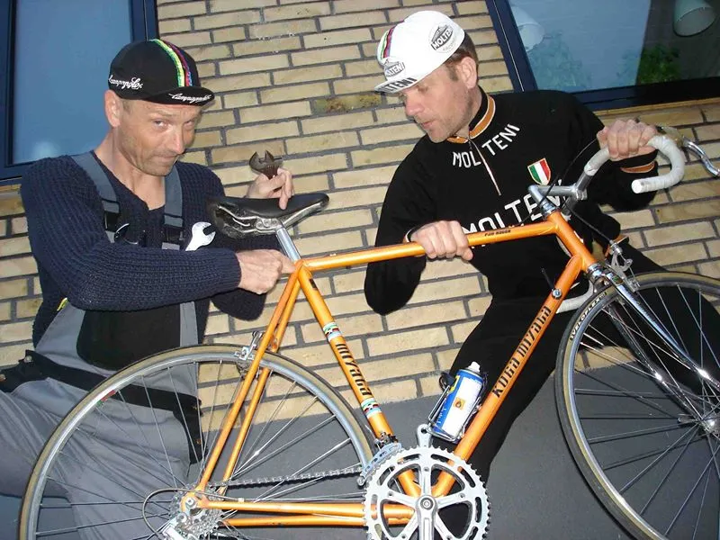

Grejsdalsløbet Enkeltstart 2015: Prologen til Giro di Grejsdalsløbet

Squadra Molteni stillede i dag op i prologen til Giro di Grejsdalsløbet. Prologen blev kørt som en enkeltstart over 15 km, med start og mål på Ibæk Strandvej i Vejle.
Ruten var den klassiske som også er anvendt til Post Danmark Rundt.
Ud af Ibæk Strandvej langs fjorden, efter 4 km op ad den lange seje stigning mod Golfklubben, derefter mod Munkebjerg, ned ad Munkebjerg-stigningen og hjem igen ad Ibæk Strandvej langs fjorden.

En hård og lækker rute, hvor udfordringen ikke blev mindre af vedvarende regn og sand og sten der var skyllet ud på vejen på golfbane stigningen nedkørslen ved Munkebjerg.
En flot 14. plads
Per Hansen kom ind på en tilfredsstillende 14 plads overall af de 31 der gennemførte, i tiden 25.32 og en gennemsnitsfart på 35,2 km./t.

Den lyserøde førertrøje kunne således desværre ikke forsvares.
Men rygtet siger, at den alligevel vil være på kroppen af en Squadra Molteni rytter til etape 2 i morgen / Grejsdalsløbet.
Vi arbejder på højtryk for at finde ud af om det kan være rigtigt! Per Hansen udtaler:
– Der er slet ingen tvivl om, at Bjørsteens Retro Bike Fitting viste sit værd i dag! Uden Bjørnsteens professionelle og erfarne justering af sadelhøjden med 0,231 mm., er jeg sikker på, at jeg stadig lå og kæmpede mig op ad signingen ved Golfbanen.
Godt nok forsvaredes den lyserøde førertrøje ikke, men jeg er sikker på, at Squadra Molteni i morgen vil vise flaget og generobre trøjen.

I morgen gælder det så etape 2, hvor der venter Squadra Molteni hhv. 135 og 180 km. meget kuperet rute.